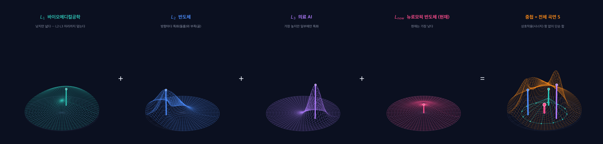
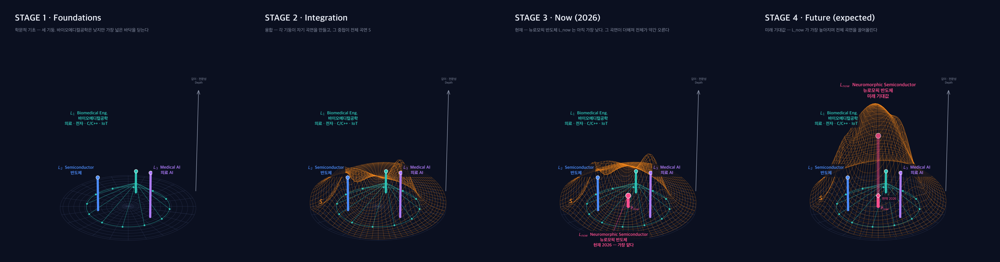
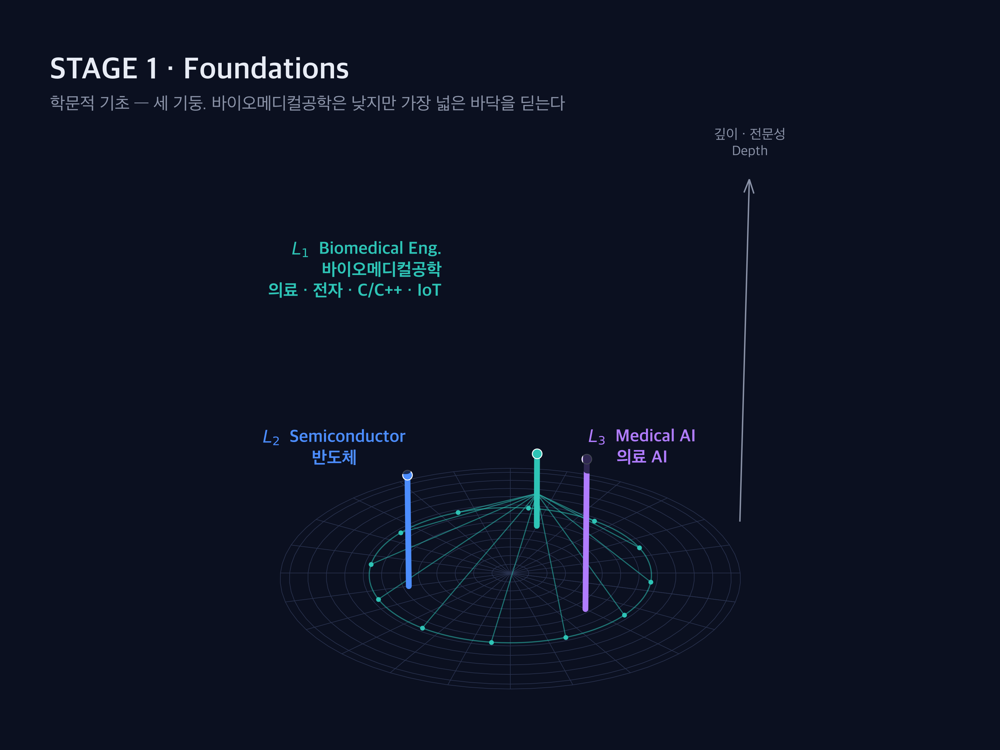
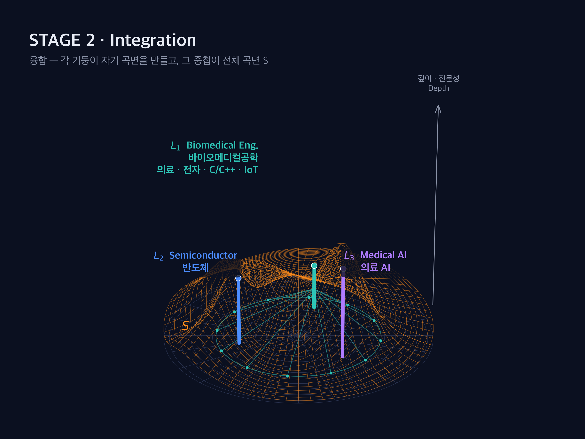
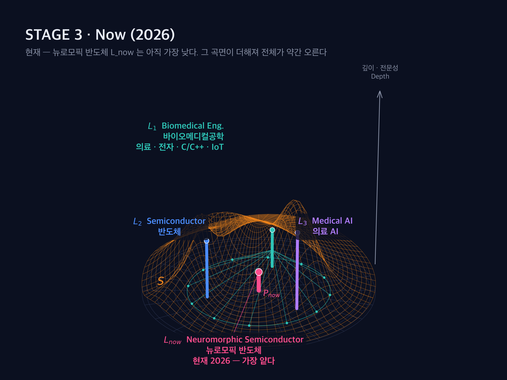
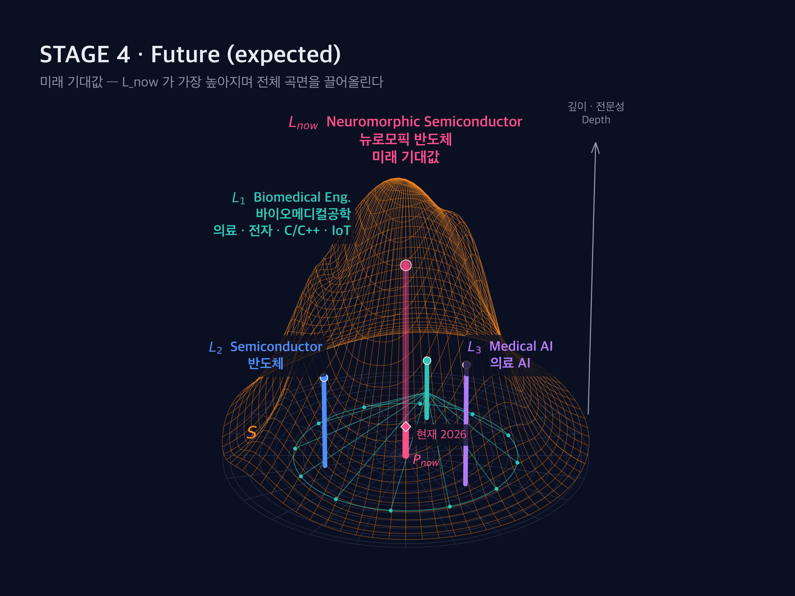
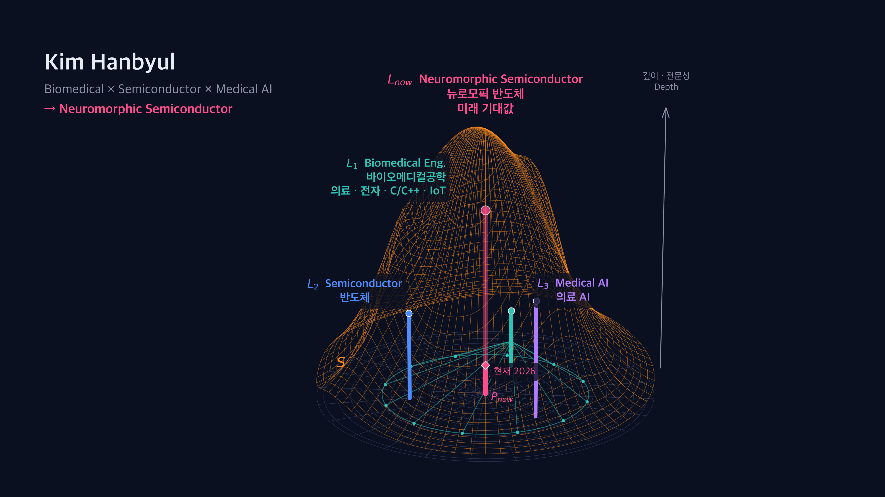

다양한 학문을 폭넓게 접했지만, 한때는 그것이 개별 깊이의 부족처럼 느껴졌다.
| 뉴로모픽 반도체의 층 | 쓰이는 기초 |
|---|---|
| 뉴런·시냅스 동작 원리 (무엇을 흉내 내는가) | L1 바이오메디컬공학 |
| 스파이크 신호 처리·SNN 동역학 (어떻게 계산하는가) — 역전파로 가중치를 고치는 기존 신경망과 달리 시간에 따라 흐르는 스파이크를 다룬다 | L1 바이오메디컬공학 — 생체신호 처리 |
| 기존 딥러닝·데이터 분석 (무엇과 비교하는가) — MRI 분할(Swin-Unet)·유전체 데이터 모델 | L3 의료 AI |
| 칩 아키텍처·공정·논리 (어디서 돌리는가) | L2 반도체 |
z축은 깊이·전문성이다. 눈금 없는 정성적 축이고, 높이는 경향을 나타내는 상징값(L1 10 · L2 15 · L3 20)이다. 각 기둥이 자기 곡면을 만들고, 전체 곡면 S는 그 곡면들의 단순 합(중첩)이다. 학문 사이의 상호작용(시너지) 항은 넣지 않았다.

| 기둥 | 높이 | 자기 곡면의 모양 |
|---|---|---|
| L1 바이오메디컬공학 | 10 | 낮지만 가장 넓다 — 폭이 기둥 간격보다 커서 L2·L3 자리까지 덮는다. 기둥도 넓은 바닥 원에서 여러 가닥이 모여 선다 |
| L2 반도체 | 15 | 기둥은 하나지만 방향마다 특화(돌출)와 부족(골)이 번갈아 있다 |
| L3 의료 AI | 20 | 가장 높지만 폭이 좁다 — 일부 영역에만 특화 |
| Lnow 뉴로모픽 반도체 | 5 → 32 | 현재(2026)는 가장 낮고, 미래 기대값에서 가장 높다. 현재 높이 위쪽은 반투명 |
| 단계 | 무엇이 바뀌나 |
|---|---|
| 1 기초 | 세 기둥만 선다 |
| 2 융합 | 세 기둥의 곡면이 생기고, 그 합이 전체 곡면 S |
| 3 현재 | Lnow의 작은 곡면이 더해져 전체가 약간 오른다 |
| 4 미래 | Lnow가 가장 높아지며 그 곡면이 전체를 끌어올린다 — 확정값이 아니라 목표 |
di는 기둥 i까지의 거리, σi는 곡면의 폭이다. mi(θ)는 L2에만 있는 방향별 변조로, 기둥 바로 위에서는 1이라 꼭짓점 높이는 그대로 두고 둘레에 돌출과 골을 만든다. 합이므로 전체 곡면은 어느 기둥보다도 높은 곳을 지난다. 위 3D 화면의 '곡면' 버튼으로 합 · 개별 · 합+개별 · 끔 네 가지 표시를 순환할 수 있다.





